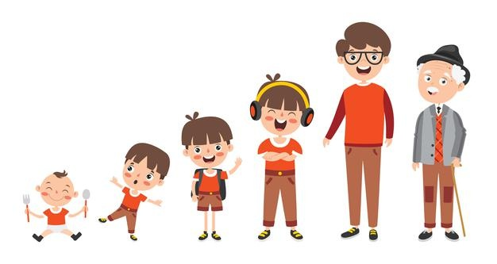

Fases da vida

Todos os seres vivos possuem fases. Cada um de acordo com a sua espécie. Os seres humanos, por exemplo, possuem quatro fases, que são a infância, adolescência, idade adulta e velhice.
Além disso, os seres possuem etapas, que são conhecidas como vida e morte. A partir do momento em que o ser humano passa pela primeira etapa, ele começa a se desenvolver nas fases da vida, até chegar à segunda etapa.
Cada fase possui características específicas, tanto físicas quanto psicológicas, principalmente por cada momento representar a formação psicológica do indivíduo. Conheça agora as fases da vida do ser humano:
Infância
É a fase que vai desde o nascimento até os onze anos de idade. Ela é um período de muita aprendizagem e novidades, já que é quando começamos a descobrir o mundo à nossa volta e as relações entre as pessoas; começamos a falar e a andar, geralmente iniciamos os estudos, aprendemos regras e limites, etc. Aqui, somos bem dependentes de nossos pais e/ou responsáveis.
Adolescência
Costuma ir dos doze aos vinte anos de idade. Nessa fase, ocorrem muitas transformações no corpo e na nossa mente. Nas meninas, os seios se desenvolvem, o corpo se apresenta mais arredondado, o quadril tende a se apresentar mais largo, e surge a menstruação. Nos meninos, a voz começa a engrossar – e algumas vezes, no início dessa mudança, ela pode se apresentar desafinada. Além disso, o pênis e os testículos aumentam de tamanho. Em ambos há o crescimento do corpo, de forma geral, e de pelos na região genital e axilas. Nos garotos, também, podem surgir pelos no rosto, formando a barba e o bigode. É geralmente nessa fase que as pessoas entram na faculdade, e também começam a namorar.
Fase adulta
Consideramos que a fase adulta se inicia aos vinte e um anos de idade. Aqui, as mudanças que ocorrem na adolescência já se estabilizaram, e a responsabilidade aumenta bastante. Em muitos casos, a pessoa já se apresenta independente financeiramente, de forma completa ou parcial; por meio do trabalho. É geralmente nessa fase que as pessoas costumam ter filhos.
Velhice
A velhice também é conhecida como terceira idade, ou melhor idade. Os cabelos começam a embranquecer, os músculos ficam mais fracos, a pele mais enrugada e a idade mais avançada.
Por possuírem experiência, geralmente as pessoas nessa fase costumam compartilhar sabedoria aos mais novos. Segundo a Organização Mundial da Saúde (OMS), essa fase se inicia aos 75 anos.
Antes a idade era 60, mas existem muitas pessoas dessa faixa etária ainda no mercado de trabalho e a expectativa de vida é maior que das gerações anteriores.